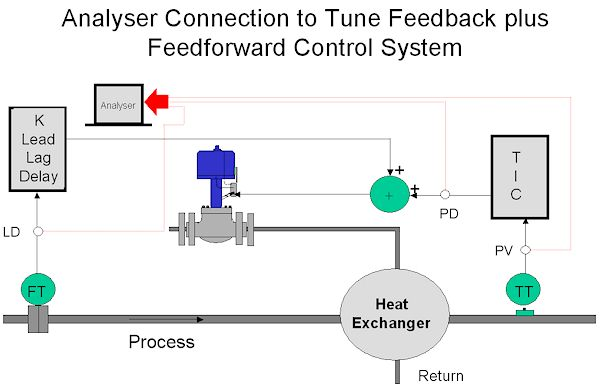
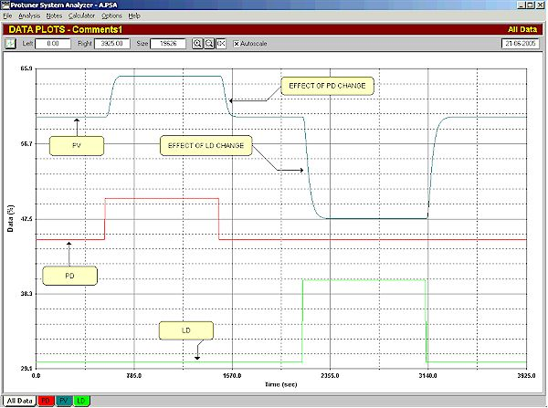
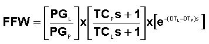
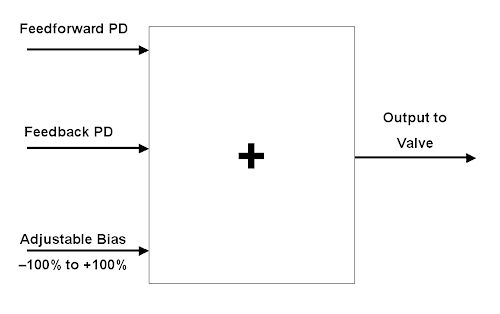
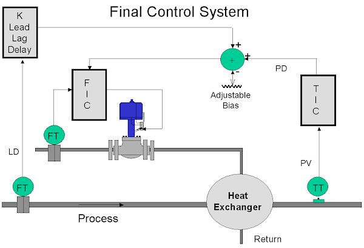

|
| [Home] [About us] [Contact us] [Training] [Optimisation services] [Protuner] |
| [Loop signatures] [Case histories] [Continuous loop performance monitoring] |
|
Loop Problem Signatures Part 2 Feedforward control - part 2 In the previous Loop Signature article it was shown how feedforward operates. It will be necessary to generate models of the process, and of the load transfer functions in order to tune the feedforward compensator. As will be shown in the next article, feedforward control tuning is not nearly as critical as feedback tuning, and fairly simple models are usually fine for the purpose in hand. It is relatively easy to obtain such models. Figure 1 shows the connections needed for recording the tests that must be performed to do this. One needs to record the signals coming from:
 Figure 1 Once the connections have been made to the recorder, the feedback controller must be placed in manual, and the feedforward (FFW) must be switched off, or frozen. (An easy way of accomplishing this is to switch the FFW gain to zero, but be careful not to bump the process). Tests are then performed. Firstly a step change is made on the PD, and the PV is allowed to stabilise, and then secondly the LD is stepped, and once again one must wait for the PV to stabilise. Figure 2 shows an example of such tests. These tests must be performed in the area where the process is normally operated.  Figure 2 One must then make simple models of the first order lag, deadtime type, discussed in the previous article. The first model will be the PV vs. the LD, and the second one the PV vs. the PD. These models can be made using the simple graphical techniques shown in Loop Signatures 3 and 4 on my CD "Basic Troubleshooting and Loop Tuning", or else if you have a Protuner, the information is available on the Loop Signature section of the tuning report, or on the more detailed modelling page given in a separate section of the loop analyser. It may be queried why only single steps (up and down) were made when doing the tests, as previously under the Loop Signature articles in the previous series, it was stressed that on a self-regulating process, at least 2 steps up, 3 down, and one back should be made. In this series however, it will be assumed that the practitioner will have done all the basic troubleshooting and analysis as detailed in the previous series, so that elementary loop problems are ironed out before starting on more advanced practices like feedforward. This is essential. One exception to a single step change would be if the system is very non-linear, and if the load changes are going to occur over a very wide range. It may then be necessary to establish models at different points, as various feedforward tunings may be required as the load varies over the range. (This is similar to gain scheduling, or adaptive tuning, as used on feedback control systems). Once the models have been obtained the feedforward tuning can be calculated as per the formula derived in the last article, which was:  The values to be inserted in the feedforward module will be:
Two points to note very carefully:
One of the more difficult things to understand when implementing a feedforward system is how to practically set up the adder where the feedback and feedforward signals are combined before the valve, as seen in Figure 1. Essentially it must be realised that we have two completely separate control systems, one being the feedforward, and the other the feedback. Both of these will be simultaneously operating the same valve. The problem with this is very practical. We have two process demand (PD) signals each with a range of 0 – 100%, and the valve itself can only move 0 – 100%. Therefore if both PD's were at 100%, and if we used a straight adder then its output would be 200%, and the valve can only move to 100%. How can we deal with this? The best method of combining the two PD signals is given in Figure 3. This avoids inserting anything additional in the loop that can multiply or divide, which would change the loop gain, and hence affect the control responses to both of the controllers.  Figure 3 As an aside, it should be noted at this point, that in general one should be careful of using multipliers and dividers in control loops as it can result in non-linearity. For example in ratio control sometimes people divide the one PV by the other to get a ratio, and then feed this signal to the controller. This does cause non-linearity. It is better to put the ratio signal on the setpoint of the controller and not inside the loop. Going back to Figure 3 one sees that a third input, which is an adjustable bias, has been placed on the input to the adder. The way to set it up is now described: To try and understand it easily, imagine that if a perfect world existed, so that if the feedforward was so perfectly tuned so that it could absolutely cancel out the effects of load changes, and if there were no other types of load changes occurring from anything else in the whole system, and if the valve operated perfectly and was completely linear, then there would be no need at all for a feedback control. The feedforward would correct perfectly every time as the load changed. However a bias would still be necessary to be able to get the process to any particular setpoint. In reality, in the practical real world of control things are far from perfect. Valves as we know, have all sort of problems associated with them. The feedforward models will never in reality be completely correct however simple the process dynamics, and in fact most process dynamics in systems where you need to use feedforward are likely to be more complex than the simple ones we are using here. Models seldom remain constant for all sorts of reasons, and systems are seldom completely linear. This means that the feedforward will never in the real world give perfect cancellation. There are all sorts of things that may also cause other load disturbances, as in this case of the heat exchanger there may be changes in the steam pressure, and in the temperature of the process fluid. Therefore as mentioned in the previous article, feedforward control cannot be used by itself, and is in fact always used in conjunction with feedback control. One should think of the feedforward as being the "master" control system, and the feedback as being a "trim". Returning to setting up the bias, one would try and operate at mid-range load conditions. At such a condition it would be nice to have the feedback controller's output at about 50%, so as it to allow it to equally apply trim adjustments in both directions. Therefore one would adjust the bias to get the feedback controller's output to about 50%. The final control system is shown in Figure 4. One change in it is the addition of a secondary cascade steam flow controller. This is to ensure that all valve problems are eliminated from the control schemes, and that the control valve will in fact deliver the steam flow as demanded by both the feedback and feedforward controllers. The reasons for this are given in Loop Signature 17 in the above referenced CD. It is really mandatory to use a cascade flow loop in sophisticated and important control systems that have slow process dynamics.  Figure 4 One point to note with this, is that the feedforward must be added to the output of the feedback controller so the adder's output goes to the setpoint of the cascade secondary flow controller. I have on occasion seen people adding it onto the output of the secondary controller. This is wrong. It is equally important that the feedforward control's output also feeds a "perfect" valve. The next article in this series will show some tests done on feedforward systems, and will illustrated how well feedforward can work Michael
Brown is a specialist in control loop optimisation, with many years of
experience in process control instrumentation. His main activities are
consulting, and teaching practical control loop analysis and
optimisation. He gives training courses which can be held in clients'
plants, where students can have the added benefit of practising on live
loops. His work takes him to plants all over South Africa, and also to
other countries. He can be contacted at:
|